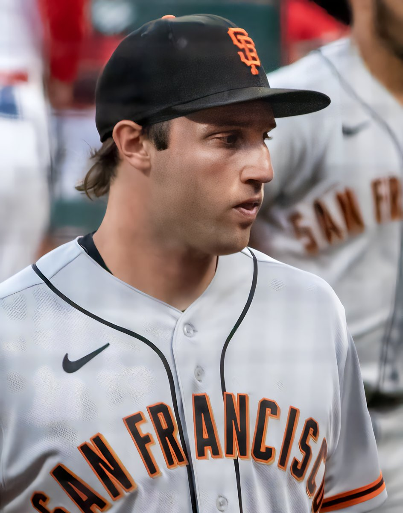

Casey Schmitt Is Having an All-Star Breakout Season, Even If the All-Star Game Didn't Notice
Nineteen home runs, a .494 slugging percentage, and the second-most valuable position player on the roster. On a 40-55 team, Casey Schmitt has quietly turned into the Giants' best story of 2026, and the NL All-Star roster got it wrong.

I have spent this whole season telling you the 2026 Giants are bad, and they are. But inside every bad season there is usually one player who refuses to go along with it, and this year that player is Casey Schmitt. The man hit a tiebreaking three-run homer Saturday night to beat the Rockies, his 19th of the season, and it barely registered as a surprise, because that is just what Schmitt does now. Quietly, on a team nobody outside the Bay is watching, the 27-year-old has put together a genuine All-Star-caliber breakout. The All-Star Game itself did not notice. I am going to.
Start with the numbers, because they hold up anywhere. Schmitt is hitting .278 with a .494 slugging percentage and a .799 OPS, good for a 118 wRC+, and his home run and RBI totals both sit inside the top 20 among qualified National League hitters. He came into the weekend at 1.7 fWAR, second among Giants position players. On a club that has spent most of the year unable to score, he has been the one bat opposing pitchers actually have to plan around. Three-plus hits in five different games. Multiple RBIs eight times. And now 19 homers before the All-Star break, in a home ballpark that has been eating right-handed power alive for a quarter century.
What makes this a breakout and not a hot streak is the underlying change. Schmitt is striking out 19.3 percent of the time, the first season of his big-league career under 20 percent. That is the whole story of his development in one number. The tools were never the question with him, he arrived as a glove-first infielder with one of the best throwing arms in the organization and real raw power. The question was whether he would make enough contact for the power to matter. In 2026, he is. Fewer empty swings, more damage, and a slugging percentage that has climbed near .500 because of it.
And here is the part that makes it more impressive, not less: the Giants never actually gave him a lane. Remember, plenty of people penciled Schmitt in as the Opening Day second baseman before the front office signed Luis Arraez and closed that door. His natural position, third base, was not open either. So he has carved out his everyday at-bats the hard way, bouncing between designated hitter, left field, and first base, hitting his way into a lineup that had no spot reserved for him. Players in that situation are supposed to wilt. Schmitt forced the issue instead, and by midseason the Giants' problem stopped being where to play him and became how to explain any lineup card without him on it.
Now, the All-Star part. San Francisco got two representatives, Arraez and Logan Webb, and both are deserving. But Schmitt had a real case, top-20 production across the board at multiple positions, and the roster machinery chewed him up the way it always chews up good players on bad teams. Nobody campaigns for the utility guy on a fourth-place club. I get it. It is still wrong. If Schmitt were doing exactly this for the Dodgers or the Phillies, he would have spent this week doing national media hits about his breakout. Instead he will spend the break at home, which, given how his summer is going, might just be dangerous for whoever the Giants face coming out of it.
Is he a finished product? No, and I am not going to pretend otherwise. His 2.2 percent walk rate is the lowest in baseball, and that is the one number that keeps his OPS from living in truly elite territory. Pitchers will keep testing whether he will chase, and the next step in this breakout is making them pay for it or laying off. But I would much rather coach aggression in a hitter doing damage than try to install power in a passive one. The hard part, the part you cannot teach, is already here.
So mark this down, because it matters for what comes next. The Giants' rebuild conversation has been all Bryce Eldridge, and fairly so, but a contending roster needs more than one bat, and Schmitt is making the case that he is part of the core, not a stopgap keeping a seat warm for it. Nineteen homers by July 11. Top-20 numbers in the league at age 27, at four different positions, on a team going nowhere. That is not a utility player having a nice year. That is an All-Star season wearing a bad team's uniform, and everyone in the Bay should be watching it for what it is.
More coverage: Giants section · Columns · Bay Area Sports Blog home